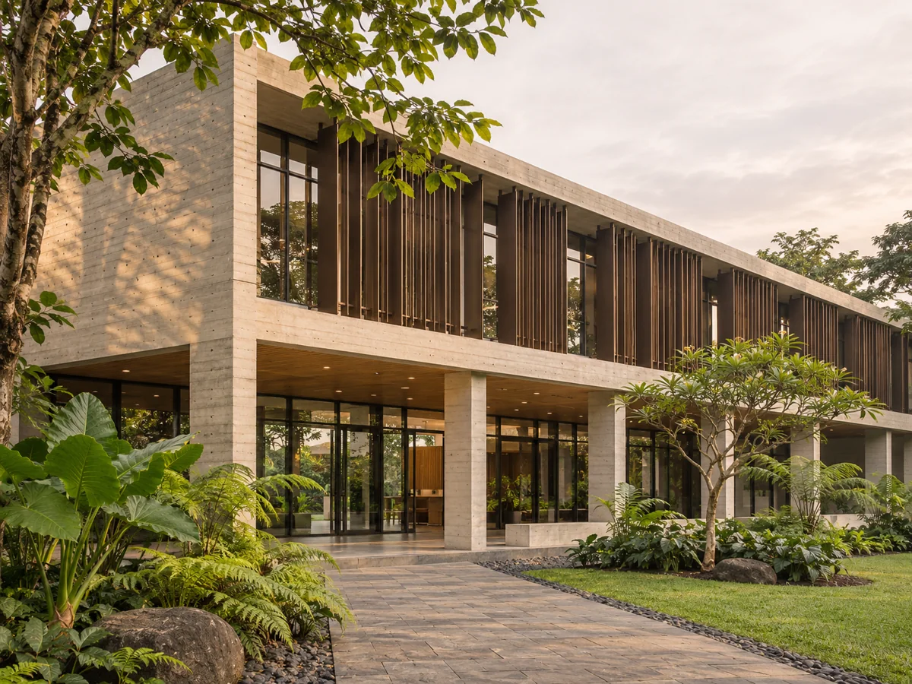

Templat yang dapat diedit
Mulai dari sampul, pengesahan, dan kata pengantar. Tambah atau susun ulang bab dan subbab. Daftar isi mengikuti susunan laporan.
Editor kajian Sertifikat Laik Fungsi
Kelola data bangunan, hasil pemeriksaan, dan foto lapangan dalam satu proyek. Saat isian berubah, bagian laporan yang tertaut ikut diperbarui.
Coba bagian awal, Bab I–II, dan sebagian daftar simak tanpa akun.

Fitur
Mulai dari sampul, pengesahan, dan kata pengantar. Tambah atau susun ulang bab dan subbab. Daftar isi mengikuti susunan laporan.
Catat hasil ukur, temuan, acuan, dan tindak lanjut. Tautkan data yang sudah diisi ke bagian laporan yang relevan.
Unggah dokumentasi ke bab dan subbab. Lanjutkan proyek di perangkat lain dengan akun yang sama.
Contoh laporan
Templat delapan bab membantu pengkaji menyusun dokumen dari data awal hingga rekomendasi teknis.
Laporan kajian teknis
Sampul · Pengesahan · Kata pengantar
Lampiran Daftar simak kajian
Harga
Kenali fitur dan format laporan sebelum tarif ditetapkan.
Pengkaji teknis dan tim konsultansi yang menyusun laporan kajian SLF untuk bangunan gedung.
Anda dapat mengisi Sampul, Bagian Awal, Intensitas dan Tata Ruang, Peta Tautan dan Acuan, Bab I, Bab II, serta 25% isian daftar simak. Draf coba berlaku selama tab tetap terbuka.
Ya. Periksa pratinjau laporan, lalu pilih Cetak / PDF untuk menyimpan salinan sebagai PDF melalui browser.
Masuk dengan akun yang sama untuk membuka draf beserta foto yang sudah tersinkron.
Pengumuman
Mode coba tersedia. Coba penyusunan bagian awal kajian, lalu masuk untuk membuka semua bagian dan menyimpan proyek ke akun Anda.
Kelola dan lanjutkan kajian SLF Anda.
Grafik memakai tanggal pembaruan sebagai perkiraan untuk kajian lama yang belum memiliki tanggal dibuat.
Buat kajian SLF untuk mulai menyusun laporan.
Versi coba berlaku selama tab ini terbuka. PDF hanya memuat bagian yang tersedia. Masuk untuk membuka seluruh bagian, mengunggah foto atau dokumen, dan menyimpan draf ke akun.